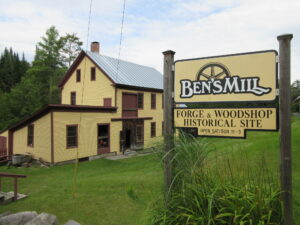

Ben's Mill — Vermont's Last Water-Powered Mill
Living History Museum · Must-See
One of the most remarkable places in all of Vermont. Ben's Mill is the only surviving, intact water-powered woodworking and blacksmith shop with its original working equipment in Vermont — and possibly the entire United States. First developed in 1836 on the Stevens River, the current mill dates to 1872. Ben Thresher operated the cider press into the 1960s and provided milling and smithing services to the community into the 1990s. Today it runs as a living history museum with demonstrations, blacksmithing events, and the legendary annual Ducky Day race down the river.
📍2236 West Barnet Road, Barnet, VT 05821
🕐Weekends 11 AM – 3 PM, late May through early October
📞(802) 397-1736 · bensmill1872@gmail.com
Gloria & Staff's tip: Don't miss the blacksmith demonstrations — they're unlike anything you'll see anywhere else. Check their website for special events including the Ducky Day river race.